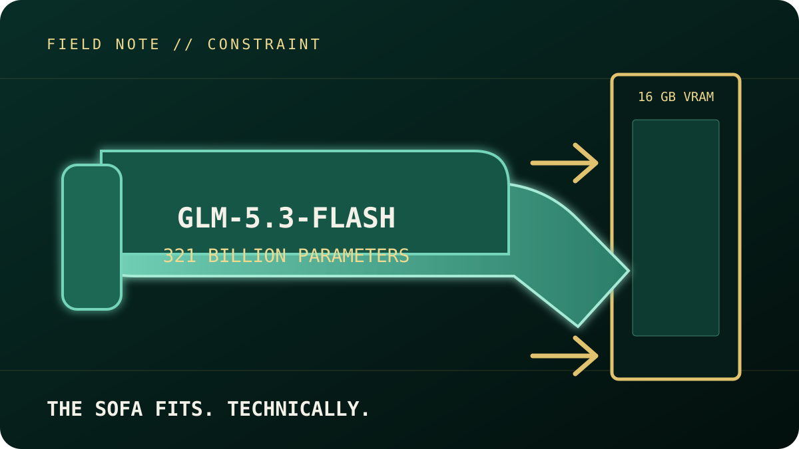
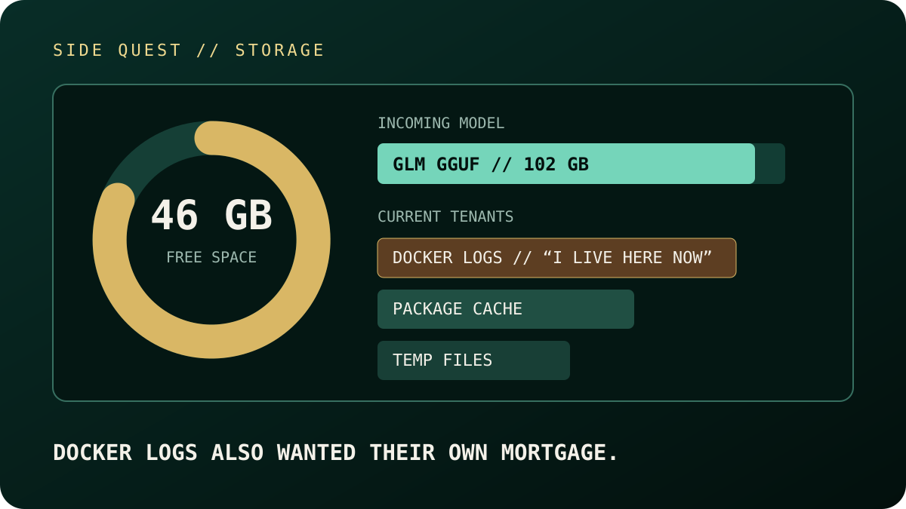
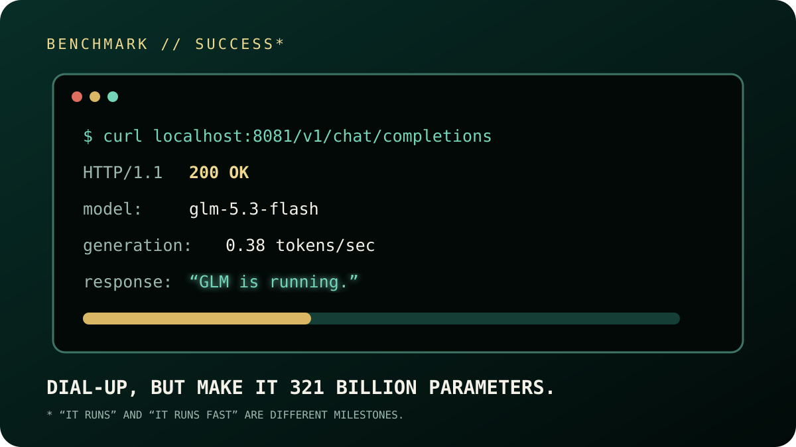

The goal sounded slightly unreasonable: run GLM‑5.3‑Flash locally on my existing Debian 12 homelab server. This is a 321‑billion-parameter model designed for coding, reasoning, and agentic workloads, but my server has a single RTX 5070 Ti with 16 GB of VRAM, 128 GB of system memory, and a Ryzen 7 5800XT. In other words, the model was approximately twenty times larger than the GPU memory available to it. This was less “install an AI model” and more “fit a sectional sofa through a condo doorway without admitting defeat.”

GLM‑5.3‑Flash does have one important advantage: it uses a Mixture-of-Experts architecture. Instead of activating all 321 billion parameters for every token, it routes each request through roughly 18 billion active parameters. That reduces the amount of computation required, but it does not eliminate the need to store the complete model. The practical options were renting a multi-GPU cloud server, building a much larger local GPU system, choosing a smaller model, or using quantization and CPU offloading. I chose the last option because the objective was not to build the fastest deployment—it was to find out whether the hardware I already owned could run the model at all.
Quantization made the experiment possible. Normally, storing the model in BF16 format would require roughly 642 GB because each parameter consumes two bytes. I used Unsloth’s UD‑IQ2_XXS GGUF release, which compresses the weights to approximately two bits per parameter and reduces the model to about 102 GB. Importantly, this did not make the entire model fit inside 16 GB of VRAM. Instead, llama.cpp automatically placed around 13.7 GB of model data on the GPU while keeping the remaining weights in system RAM. The GPU handled the tensors it could accommodate, while the CPU and RAM supplied everything else. Quantization is therefore less like shrinking a moving truck into a hatchback and more like packing the truck very efficiently and towing the rest behind it.
Implementation required a custom llama.cpp branch with early support for GLM’s glm5next architecture. I compiled it for the RTX 5070 Ti’s Blackwell architecture using CUDA 13.3, CMake, and Ninja, then downloaded the four-part GGUF model from Hugging Face. The server was configured with a 4,096-token context window, one inference slot, eight CPU threads, and automatic GPU-layer fitting. Two settings—disabling TensorFloat-32 overrides and leaving flash attention off—were required for correct output in this experimental build. Once the model loaded, llama.cpp exposed a local OpenAI-compatible API on port 8081, allowing it to accept the same general request format used by many commercial AI services.
Storage became an unexpected side quest. The server’s 512 GB SSD initially had only 46 GB available, while the model alone needed more than twice that amount. Cleaning stale temporary files, oversized Docker logs, package caches, and unused images eventually created enough room. An interrupted SSH session then stopped the first download attempt halfway through, but llama.cpp retained the partial shards and resumed them later. I moved the process into a systemd-managed service so it could survive SSH disconnects and continue loading independently. Apparently deploying a 321B model was not enough; Docker logs also wanted their own mortgage.

The final result was successful, although nobody will confuse it with a low-latency production endpoint. The health check returned 200 OK, and the model correctly responded to its first API prompt with “GLM is running.” Prompt processing reached approximately 0.91 tokens per second, while generation averaged 0.38 tokens per second. Producing 35 completion tokens took about 89 seconds, with the complete request finishing in just under two minutes. The RTX 5070 Ti reported full utilization, but drew only around 46 watts, indicating that it was frequently waiting for data from system memory rather than operating at its full computational capacity. It felt a little like dial-up internet had returned, except this time it had 321 billion parameters.

There is still room to improve. The server’s four memory modules are currently running at only 2,133 MT/s, making RAM bandwidth the clearest confirmed bottleneck; increasing that speed to a stable 2,667 or 2,933 MT/s should reduce some of the waiting. Quantizing the key-value cache to eight bits, reducing the reserved VRAM from 2 GB to 1 GB, and benchmarking different CPU-thread counts may provide additional incremental gains. Newer experimental approaches can also cache frequently selected Mixture-of-Experts weights in VRAM, potentially reducing repeated transfers between RAM and the GPU. The broader conclusion, however, is already clear: a single 16 GB consumer GPU can technically serve a 321B model when paired with aggressive quantization and enough system memory—but “it runs” and “it runs well” remain two very different engineering milestones.